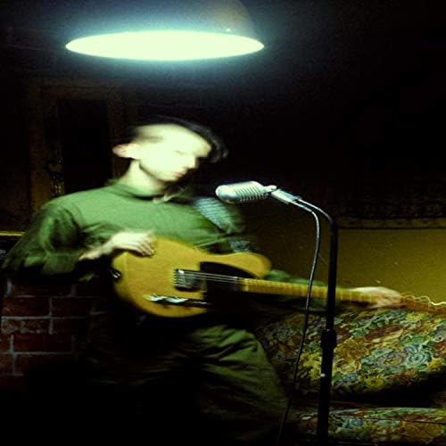
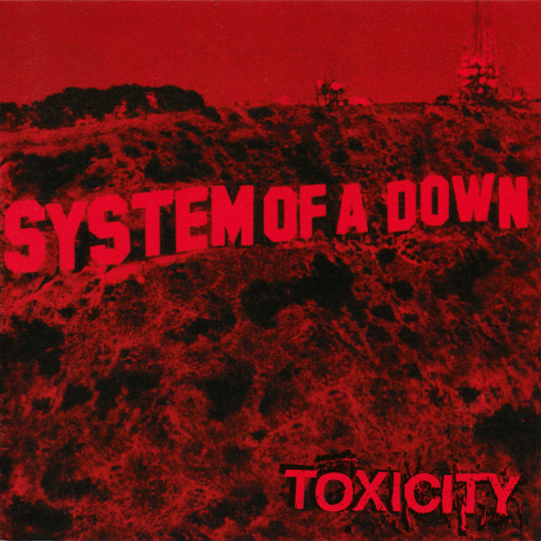

|  |  | |
Drowsy - Banes WorldEs un album psicodelico que es capaz de crear una gran ola de emociones y sentimientos hacia cualquier oyente, el cual se puede sentir representado e identificado por las letras y notas que se presentan en los temas siguientes. |
Toxicity - System of a downEs una reflexión sobre los problemas ambientales y sociales, invitando a los oyentes a considerar su propio papel en la creación de desorden y a buscar maneras de iluminar y mejorar el mundo en el que vivimos. |
D-DAY - Agust DExplora lírica y musicalmente el concepto de libertad, lo que significa, ya sea una bendición o una maldición. Este album te logra transmiter grandes emociones con cada una de sus musicas |